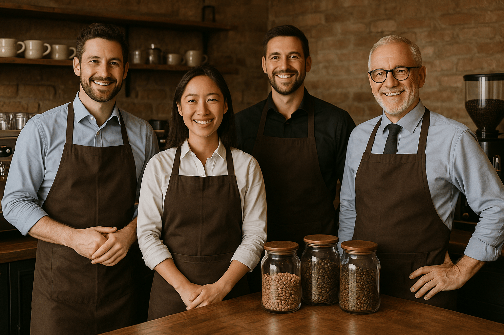

Una historia que comenzó con una taza
Punto Café nació de una idea sencilla: crear un lugar donde el café pudiera disfrutarse, conocerse y
compartirse. Con el tiempo, esa idea fue creciendo y encontró en distintas personas los
conocimientos y las experiencias necesarias para convertirse en lo que es hoy.
Detrás de cada taza hay una historia, y detrás de cada historia hay alguien que aporta su manera
particular de entender el café.
Greg — El fundador
Greg es el origen de Punto Café. Su relación con el café comenzó mucho antes de pensar en abrir una
cafetería. A lo largo de los años fue descubriendo distintas formas de prepararlo y, sobre todo,
aprendiendo a valorar los pequeños detalles que hacen diferente a una buena taza.
Con esa experiencia nació la idea de crear Punto Café: un espacio donde el café pudiera ser
mucho más que una bebida y donde cada persona pudiera descubrir su propia manera de disfrutarlo.
Jesús — El embajador en Italia
Jesús lleva consigo una parte de la cultura cafetera italiana. Su recorrido por Italia le permitió
conocer de cerca una tradición construida alrededor del espresso, sus métodos de preparación y el
ritual que acompaña cada taza.
Desde allí mantiene un vínculo permanente con Punto Café, aportando conocimientos, costumbres
y nuevas perspectivas que ayudan a conectar nuestra cafetería con una de las culturas más
importantes del mundo del café.
María — Especialista en pastelería
María es la encargada de darle un lugar especial a la pastelería dentro de Punto Café. Su trabajo
combina recetas tradicionales, elaboración artesanal y atención por los detalles.
Cada brownie, cookie, medialuna o porción de torta está pensado para complementar el café sin
quitarle protagonismo, creando combinaciones que forman parte de la identidad de la cafetería.
Lucho — Maestro barista
Lucho es quien transforma los granos de café en cada una de nuestras preparaciones. Su trabajo
requiere precisión y conocimiento: molienda, temperatura, extracción, proporciones y textura son
parte de un proceso en el que cada detalle cuenta.
Su pasión por el barismo lo llevó a conocer las particularidades de cada estilo, desde un ristretto
intenso hasta un cappuccino equilibrado, buscando que cada preparación respete su propia identidad.
Cuatro historias, un mismo lugar
Greg, Jesús, María y Lucho llegaron a Punto Café desde caminos diferentes, pero encontraron en el
café un punto en común.
Uno aportó la visión, otro la tradición, otra la pastelería y otro el conocimiento detrás de cada
extracción. Juntos construyeron un espacio donde el café se encuentra con la gastronomía, la
tradición y, sobre todo, con las personas.
Punto Café es el resultado de esas historias compartidas.